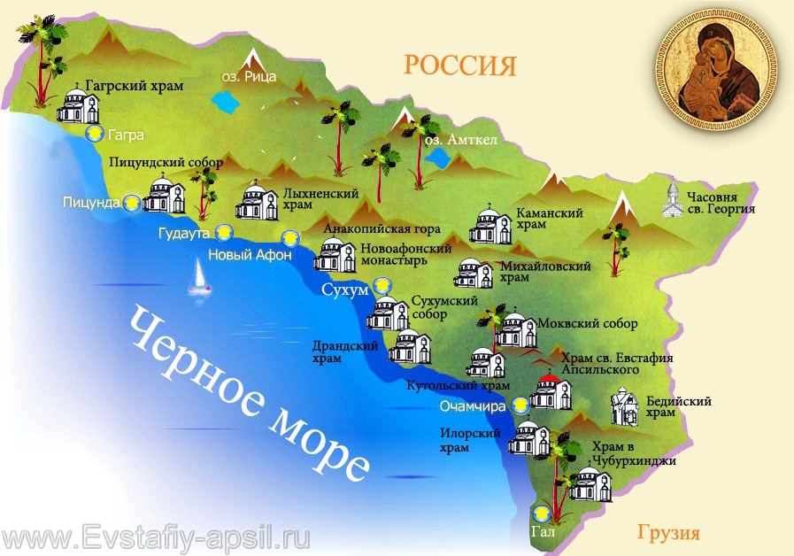
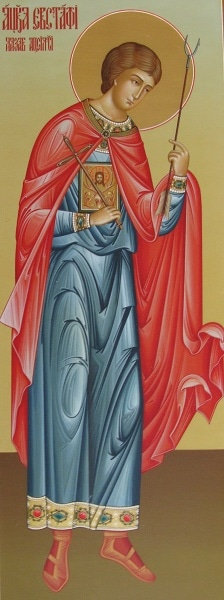
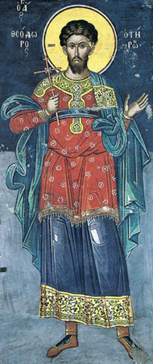
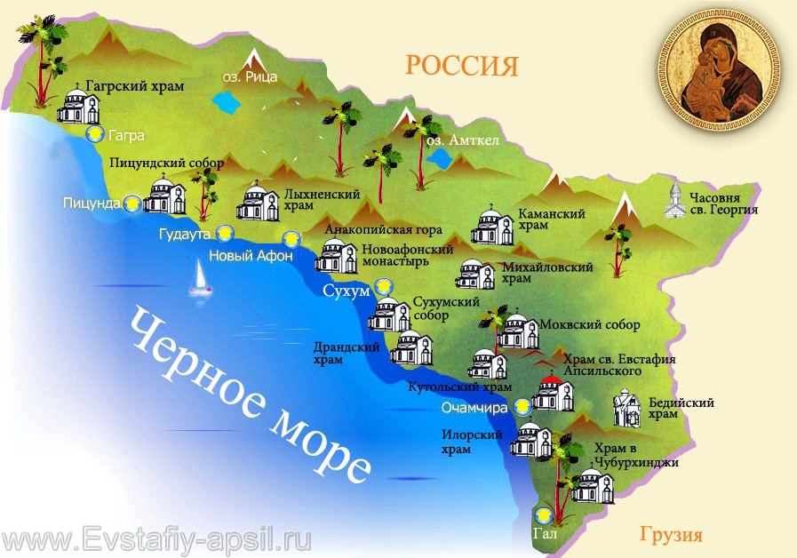

3 10 2011 (2049 дней 19 часов назад)
Святые Великомученики Евстафий Апсильский
и Евстафий Плакида
Во времена василевса Юстиниана II, по прозвищу Ринотмете, на окраине империи ромеев, у правителя апсилов, населявшие территорию между Себастополисом и Зиганисом, родился сын. Правитель апсилов блистательный патриций по имени Марин был преисполнен счастья рождению дитя - наследника престола. На восьмой день после рождения ребенка, Марин крестил своего сына в древнем храме главной своей крепости Цибилиум или, как именовали его ромеи, - Сидерон, что значит «Железная крепость». Это был тот храм, который вместе с крепостью был воздвигнут во времена великого василевса Юстиниана. При Юстиниане апсилы стали народом Христовым. Их крестил святитель Константин, первый епископ Цибилиума.
При крещении ребенок был назван в честь святого Евстафия Плакиды, доблестного воина, принявшего мученический венец во времена императора Трояна. Родители мальчика не могли знать тогда, что их сыну, подобно Евстафию Плакиде, будет суждено стать не только хорошим стратигом, но и мучеником за Господа нашего Иисуса Христа. Святой Евстафий Апсильский очень чтил своего небесного покровителя, к которому он прибегал в молитвах, когда для его народа наступали трудные времена. Он построил храм в честь святого мученика Евстафия Плакиды, украсил алтарную преграду храма каменными изразцами. Вместе с Евстафием сыном Марина и народ апсилы стали чтить святого мученика Евстафия Плакиду, пересказывая дивные рассказы из его жития. Особенно полюбился апсилам случай из жизни святого Евстафия Плакиды, когда во время охоты ему явился Спаситель.
Однажды Евстафий отправился на охоту, и слуга, посланный на поиски зверя, донес ему, что недалеко пасется стадо оленей. Стратиг в надлежащем порядке расставил охотников и распорядился, как вести охоту. Когда спутники его праздно стояли в ожидании, из чащи показался олень, из-за своей мощности и быстроты бега опередивший все стадо, который привлек к себе глаза Евстафия и, подобно какому-нибудь прославленному вражескому воину, как бы вызывал его на бой. И вот Евстафий Плакида, велев всем охотникам на указанных им местах ожидать стада, в сопровождении нескольких спутников, отпустив поводья, стремительно бросился в погоню за тем оленем. Затем, когда спутники его утомились, он продолжал погоню один, конь его не знал усталости, и Евстафий не остановился до тех пор, пока олень, увидев его без спутников и вскочив на вершину отвесной скалы, недоступную даже для этих животных, не прекратил одновременно своего бега и преследования охотника. Теперь казалось, что ловец не настиг добычу, но сам стал жертвой того, кого преследовал. Стратилат Евстафий в поисках места, где ему было бы возможно подняться на скалу, чтобы не упустить такую редкостную добычу, на самом деле был уловлен великой и божественной мудростью. Ибо на голове увиденного им оленя между обеими рогами его было ярко сверкающий и, как пламя, горящий лик Господа нашего Иисуса Христа. И тут же прозвучал глас: «Плакида, что ты гонишь меня?» Ибо тогда еще Евстафия так звали. «Я – Иисус Христос, радуюсь на твои добродетели и определил, что несправедливо такому богатству скрываться в глубокой тьме идолослужения и пропадать напрасно. Единственно любовь к человекам и желание спасти их подвигло Меня, Бога, обитающего Небеса, кому поклоняются невещественные силы, сойти на землю, приняв образ, в котором ты Меня зришь». Пораженный столь пречудным видением и гласом, Плакида тут же упал на землю – у него не достало сил зреть и слышать подобное, а более того из благоговения, ибо ему открылся Сам Господь. Оправившись от великого удивления и немного придя в себя, он спросил в сильном душевном страхе: «Кто ты, владыка?». И снова услышал тот же глас, исходящий от святого образа Господня: «Я – Иисус Христос, создавший из небытия весь мир, своими руками сотворивший человека и простерший свое человеколюбие и далее, спасши его, сломленного грехом». И по порядку перечислил свое вочеловечение, распятие, смерть, погребение, все, что даровало освобождение роду людскому, порабощенному и воистине простертому во прахе, а также вознесение и причастность тайнам. Услышав эти слова, Плакида, как апостол Павел, просветился Божественных тайн и уверовал, чему внимал и что узрел, и показал делами своими, что сеятель небесный бросил зерна не на каменистое место и не в терние, но в тучную землю. Евстафий Плакида после этого ведения вместе с женою и детьми принимает крещение. Но Плакиду ожидали большие испытания в вере.
Господь уготовил испытания не только святому Евстафию Плакиде, будет испытан в вере и Евстафий Апсильский. Как дом святого стратига Евстафия Плакиды поразила губительная чума, так и страну Апсилию, которой правил Евстафий сын Марина, настигла чума нашествия сарацинов.
Преподобный Феофан Сигрианский или, как именовали его иные писатели, Феофан Исповедник, пострадавший за почитание святых икон, во времена злочестивого имеператора-иконоборца Льва Армянина, в своей летописи сообщает, что в 738 году в Апсилию вторглись сарацинские полчища во главе с Сулейманом Ибн-Исамом. Сарацины осадили главное укрепление апсилов Сидерон. Патриция Марина, имевшего славный опыт борьбы с сарацинами уже не было в живых. Его сын Евстафий правивший апсилами, удерживал крепость до последних сил. Но, численное превосходство агарянского войска, позволило им взять железную крепость Апсилии и пленить самого правителя. Блаженного Евстафия сарацины увели в знаменитый месопотамский город Харран.
Харран. В этот город во времена ветхозаветных патриархов пришел Фарра с сыном своим Авраамом. Фарра по пути из Ура Халдейского в землю Ханаанскую дойдя до Харрана, остался жить здесь до конца своих дней. И погребен он был в Харране, где через много веков окончит дни своей жизни и новозаветный свидетель Бога Живого Евстафий Апсилский.
Преподобный Феофан Сигрианский говорит, что в 740 году Исам, вождь аравийский, избил пленных христиан во всех городах своего владычества. Во время этих гонений на христиан пострадал и блаженный Евстафий сын Марина. По словам преподобного Феофана, несмотря на все принуждения, святой Евстафий Апсильский не отрекся от истинной веры, и в месопотамском городе Харране, оказался истинным мучеником Христовым. О святых мощах святого мученика Евстафия Апсильского, покоившихся в одном из христианских храмов Харрана, преподобный Феофан Сигрианский говорит, что они и в его время благодатью Божьею производили всякие целения.
О мученической кончине святого Евстафия Апсильского и о чудесных исцелениях, происходивших у его святых мощей, вскоре узнали и на его родине. Абхазская Церковь, в это же время получившая свою самостоятельность, стала особо чтить своего великого угодника Божьего, заступника за землю абхазскую. Господь видя то, что на земле абхазской есть такой человек как святой Евстафий, который ради истинной веры отказался от власти, богатства и почести, ниспошлет Свое благословение и дарует силы царю Леону создать в скором времени сильное, независимое Абхазское православное царство.
Да возродится и ныне Церковь и страна Абхазская молитвами святого великомученика Евстафия Апсильского, предстоящего у престола Царя Славы Господа Иисуса Христа, Которому слава, честь, сила, величие и поклонение ныне и присно и вовеки веков. Аминь.

и Евстафий Плакида
Во времена василевса Юстиниана II, по прозвищу Ринотмете, на окраине империи ромеев, у правителя апсилов, населявшие территорию между Себастополисом и Зиганисом, родился сын. Правитель апсилов блистательный патриций по имени Марин был преисполнен счастья рождению дитя - наследника престола. На восьмой день после рождения ребенка, Марин крестил своего сына в древнем храме главной своей крепости Цибилиум или, как именовали его ромеи, - Сидерон, что значит «Железная крепость». Это был тот храм, который вместе с крепостью был воздвигнут во времена великого василевса Юстиниана. При Юстиниане апсилы стали народом Христовым. Их крестил святитель Константин, первый епископ Цибилиума.
При крещении ребенок был назван в честь святого Евстафия Плакиды, доблестного воина, принявшего мученический венец во времена императора Трояна. Родители мальчика не могли знать тогда, что их сыну, подобно Евстафию Плакиде, будет суждено стать не только хорошим стратигом, но и мучеником за Господа нашего Иисуса Христа. Святой Евстафий Апсильский очень чтил своего небесного покровителя, к которому он прибегал в молитвах, когда для его народа наступали трудные времена. Он построил храм в честь святого мученика Евстафия Плакиды, украсил алтарную преграду храма каменными изразцами. Вместе с Евстафием сыном Марина и народ апсилы стали чтить святого мученика Евстафия Плакиду, пересказывая дивные рассказы из его жития. Особенно полюбился апсилам случай из жизни святого Евстафия Плакиды, когда во время охоты ему явился Спаситель.
Однажды Евстафий отправился на охоту, и слуга, посланный на поиски зверя, донес ему, что недалеко пасется стадо оленей. Стратиг в надлежащем порядке расставил охотников и распорядился, как вести охоту. Когда спутники его праздно стояли в ожидании, из чащи показался олень, из-за своей мощности и быстроты бега опередивший все стадо, который привлек к себе глаза Евстафия и, подобно какому-нибудь прославленному вражескому воину, как бы вызывал его на бой. И вот Евстафий Плакида, велев всем охотникам на указанных им местах ожидать стада, в сопровождении нескольких спутников, отпустив поводья, стремительно бросился в погоню за тем оленем. Затем, когда спутники его утомились, он продолжал погоню один, конь его не знал усталости, и Евстафий не остановился до тех пор, пока олень, увидев его без спутников и вскочив на вершину отвесной скалы, недоступную даже для этих животных, не прекратил одновременно своего бега и преследования охотника. Теперь казалось, что ловец не настиг добычу, но сам стал жертвой того, кого преследовал. Стратилат Евстафий в поисках места, где ему было бы возможно подняться на скалу, чтобы не упустить такую редкостную добычу, на самом деле был уловлен великой и божественной мудростью. Ибо на голове увиденного им оленя между обеими рогами его было ярко сверкающий и, как пламя, горящий лик Господа нашего Иисуса Христа. И тут же прозвучал глас: «Плакида, что ты гонишь меня?» Ибо тогда еще Евстафия так звали. «Я – Иисус Христос, радуюсь на твои добродетели и определил, что несправедливо такому богатству скрываться в глубокой тьме идолослужения и пропадать напрасно. Единственно любовь к человекам и желание спасти их подвигло Меня, Бога, обитающего Небеса, кому поклоняются невещественные силы, сойти на землю, приняв образ, в котором ты Меня зришь». Пораженный столь пречудным видением и гласом, Плакида тут же упал на землю – у него не достало сил зреть и слышать подобное, а более того из благоговения, ибо ему открылся Сам Господь. Оправившись от великого удивления и немного придя в себя, он спросил в сильном душевном страхе: «Кто ты, владыка?». И снова услышал тот же глас, исходящий от святого образа Господня: «Я – Иисус Христос, создавший из небытия весь мир, своими руками сотворивший человека и простерший свое человеколюбие и далее, спасши его, сломленного грехом». И по порядку перечислил свое вочеловечение, распятие, смерть, погребение, все, что даровало освобождение роду людскому, порабощенному и воистине простертому во прахе, а также вознесение и причастность тайнам. Услышав эти слова, Плакида, как апостол Павел, просветился Божественных тайн и уверовал, чему внимал и что узрел, и показал делами своими, что сеятель небесный бросил зерна не на каменистое место и не в терние, но в тучную землю. Евстафий Плакида после этого ведения вместе с женою и детьми принимает крещение. Но Плакиду ожидали большие испытания в вере.
Господь уготовил испытания не только святому Евстафию Плакиде, будет испытан в вере и Евстафий Апсильский. Как дом святого стратига Евстафия Плакиды поразила губительная чума, так и страну Апсилию, которой правил Евстафий сын Марина, настигла чума нашествия сарацинов.
Преподобный Феофан Сигрианский или, как именовали его иные писатели, Феофан Исповедник, пострадавший за почитание святых икон, во времена злочестивого имеператора-иконоборца Льва Армянина, в своей летописи сообщает, что в 738 году в Апсилию вторглись сарацинские полчища во главе с Сулейманом Ибн-Исамом. Сарацины осадили главное укрепление апсилов Сидерон. Патриция Марина, имевшего славный опыт борьбы с сарацинами уже не было в живых. Его сын Евстафий правивший апсилами, удерживал крепость до последних сил. Но, численное превосходство агарянского войска, позволило им взять железную крепость Апсилии и пленить самого правителя. Блаженного Евстафия сарацины увели в знаменитый месопотамский город Харран.
Харран. В этот город во времена ветхозаветных патриархов пришел Фарра с сыном своим Авраамом. Фарра по пути из Ура Халдейского в землю Ханаанскую дойдя до Харрана, остался жить здесь до конца своих дней. И погребен он был в Харране, где через много веков окончит дни своей жизни и новозаветный свидетель Бога Живого Евстафий Апсилский.
Преподобный Феофан Сигрианский говорит, что в 740 году Исам, вождь аравийский, избил пленных христиан во всех городах своего владычества. Во время этих гонений на христиан пострадал и блаженный Евстафий сын Марина. По словам преподобного Феофана, несмотря на все принуждения, святой Евстафий Апсильский не отрекся от истинной веры, и в месопотамском городе Харране, оказался истинным мучеником Христовым. О святых мощах святого мученика Евстафия Апсильского, покоившихся в одном из христианских храмов Харрана, преподобный Феофан Сигрианский говорит, что они и в его время благодатью Божьею производили всякие целения.
О мученической кончине святого Евстафия Апсильского и о чудесных исцелениях, происходивших у его святых мощей, вскоре узнали и на его родине. Абхазская Церковь, в это же время получившая свою самостоятельность, стала особо чтить своего великого угодника Божьего, заступника за землю абхазскую. Господь видя то, что на земле абхазской есть такой человек как святой Евстафий, который ради истинной веры отказался от власти, богатства и почести, ниспошлет Свое благословение и дарует силы царю Леону создать в скором времени сильное, независимое Абхазское православное царство.
Да возродится и ныне Церковь и страна Абхазская молитвами святого великомученика Евстафия Апсильского, предстоящего у престола Царя Славы Господа Иисуса Христа, Которому слава, честь, сила, величие и поклонение ныне и присно и вовеки веков. Аминь.
День памяти святого великомученика Евстафия патрикия Апсильского Абхазская Церковь празднует в один день с памятью его небесного покровителя, Евстафия Плакиды, 20 сентября по старому стилю, 3 октября по новому стилю.

По молитвам святого Евстафия да ниспошлет Господь мир и благоденствие земле абхазской.
